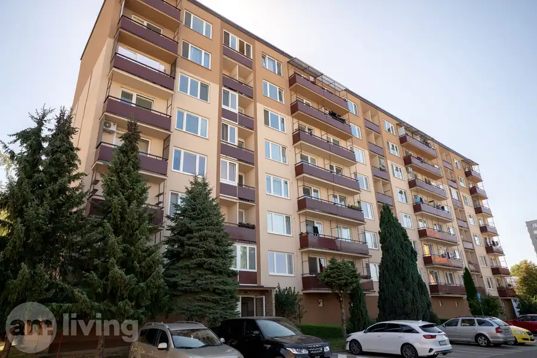
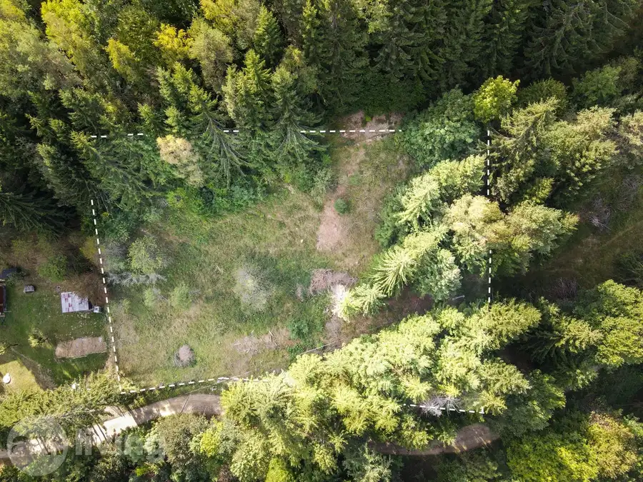
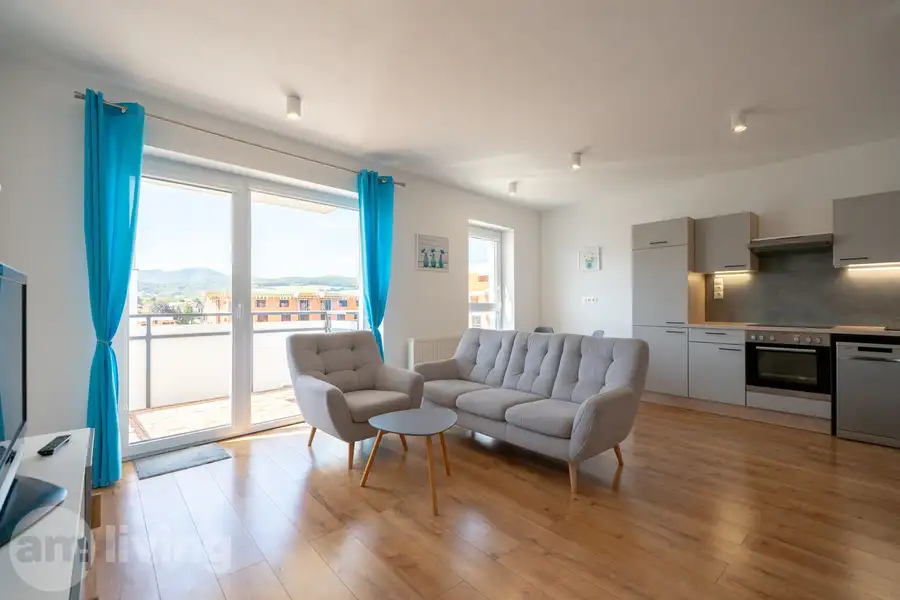
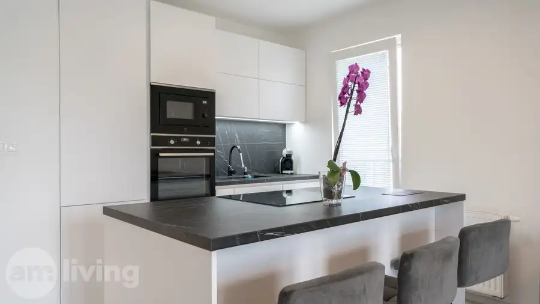
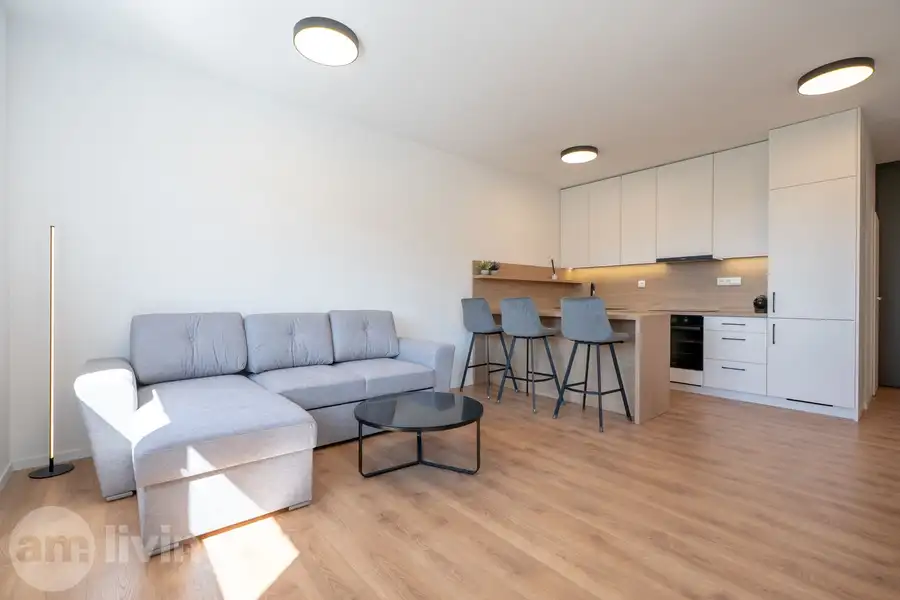
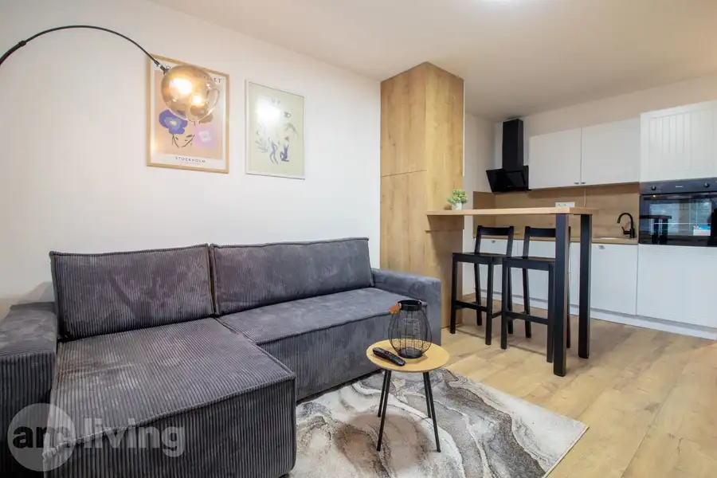

Aktuálna ponuka
Nehnuteľnosti, ktoré ponúkam
10 nehnuteľností na predaj a prenájom. Vyberte typ, alebo napíšte lokalitu.
10 z 10 ponúk
 Rodinné domy10
299 900 €NOVOSTAVBA - zariadený rodinný dom - Trenčianske Jastrabie
Trenčianske Jastrabie
4-izbový101.5 m²
AM LIVING realitná kancelária Vám ponúka na predaj komplet zariadený a skolaudovaný 4 izbový rodinný dom - novostavbu kolaudovanú v roku 2025.…
Rodinné domy10
299 900 €NOVOSTAVBA - zariadený rodinný dom - Trenčianske Jastrabie
Trenčianske Jastrabie
4-izbový101.5 m²
AM LIVING realitná kancelária Vám ponúka na predaj komplet zariadený a skolaudovaný 4 izbový rodinný dom - novostavbu kolaudovanú v roku 2025.…
 Byt10
599 900 €EUROVEA - 3i byt 94m2 - Bratislava - Nivy (Downtown)
Nivy, Bratislava
3-izbový94 m²4. podlažie
AM LIVING realitná kancelária Vám predstavuje ponuku prémiového bývania na jednej z najvyhľadávanejších adries v Bratislave. Na predaj ponúkame…
Byt10
599 900 €EUROVEA - 3i byt 94m2 - Bratislava - Nivy (Downtown)
Nivy, Bratislava
3-izbový94 m²4. podlažie
AM LIVING realitná kancelária Vám predstavuje ponuku prémiového bývania na jednej z najvyhľadávanejších adries v Bratislave. Na predaj ponúkame…
 Byt10
144 900 €TOP LOKALITA - 2i byt 61m2 s loggiou - Nová Dubnica
Nová Dubnica
2-izbový61 m²13. podlažie
AM LIVING realitná kancelária Vám ponúka na predaj 2 izbový byt o výmere 61m2 nachádzajúci sa na 4.poschodí v zrevitalizovaneom bytovom dome vy…
Byt10
144 900 €TOP LOKALITA - 2i byt 61m2 s loggiou - Nová Dubnica
Nová Dubnica
2-izbový61 m²13. podlažie
AM LIVING realitná kancelária Vám ponúka na predaj 2 izbový byt o výmere 61m2 nachádzajúci sa na 4.poschodí v zrevitalizovaneom bytovom dome vy…
 Byt10
173 000 €NOVOSTAVBA - 2i byt + parking + balkón - Geminim Trenčín
Trenčín
2-izbový43.52 m²6. podlažie
AM LIVING realitná kancelária Vám ponúka na predaj moderný 2-izbový byt v novostavbe s balkónom, vlastným parkovaním za rampou a krásnym výhľadom na…
Byt10
173 000 €NOVOSTAVBA - 2i byt + parking + balkón - Geminim Trenčín
Trenčín
2-izbový43.52 m²6. podlažie
AM LIVING realitná kancelária Vám ponúka na predaj moderný 2-izbový byt v novostavbe s balkónom, vlastným parkovaním za rampou a krásnym výhľadom na…

Byt10 149 900 €Priestranný - 3,5 izb byt 80 m² - Centrum II, Dubnica nad Váhom Dubnica nad Váhom 3-izbový80 m²3. podlažie AM LIVING realitná kancelária Vám ponúka na predaj priestranný 3-izbový byt v obľúbenej lokalite Centrum II v Dubnici nad Váhom, len pár minút od…
Pozemok3 78 900 €ABSOLÚTNY KĽUD - stavebný pozemok 1.755m² - Lazy pod Makytou Lazy pod Makytou 1755 m² AMLIVING realitná kancelária ponúka na predaj výnimočný stavebný pozemok o výmere 1755 m² v obci Lazy pod Makytou, situovaný na polosamote priamo na…
Byt10 Cena dohodouNOVOSTAVBA - 3i byt 67 m2 + balkón - Trenčín, Tramínová Trenčín 3-izbový67 m²3. podlažie AM LIVING realitná kancelária Vám ponúka na prenájom kompletne zariadený 3 izbový byt v novostavbe o výmere 67 m² nachádzajúci sa na 3. poschodí (zo…
Byt10 Cena dohodouNA PRENÁJOM - 3i v novostavbe 76 m2, balkón a parking - Trenčín Trenčín 3-izbový76 m²7. podlažie AM LIVING realitná kancelária Vám ponúka na prenájom kompletne zariadený 3-izbový byt s výmerou 76 m² v novostavbe projektu Urban Park. Byt sa…
Byt10 Cena dohodouNA PRENÁJOM – 2i v novostavbe 60 m2, balkón a parking – Nová Dubnica Nová Dubnica 2-izbový60 m²3. podlažie AM LIVING realitná kancelária Vám ponúka na prenájom úplne nový, kompletne zariadený 2-izbový byt s výmerou 60 m² v najnovšom projekte Hliny v Novej…
Byt7 Cena dohodouPRENÁJOM - garsónka 25m2 + veľký balkón - Dubnica nad Váhom Dubnica nad Váhom 25 m²2. podlažie AM LIVING realitná kancelária Vám ponúka na prenájom výnimočnú garsonku o výmere 25 m², nachádzajúcu sa na 2. poschodí s výťahom na ulici Centrum I.…Tomuto výberu zatiaľ nezodpovedá žiadna ponuka. Napíšte mi, čo hľadáte.